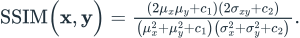

整体概括
把在线跟踪图和最终重建分开
系统输入是同一刚性支架上的 LiDAR 点云、相机图像和 IMU 测量。前端实时估计位姿并归档关键帧，离线交替调整位姿和高斯后重建地图；定位旁路接收查询图像，从已归档的描述子和最终地图恢复位姿。这里的世界模型是可渲染的空间表示，不是预测环境动力学的模型。
对照原文证据
The sensor data are captured by a rig carrying three rigidly mounted sensor types: a 3D LiDAR producing metric point clouds, a color camera producing images, and a built-in IMU producing high-rate inertial measurements. The LiDAR–camera extrinsic \mathbf{T}_{c}^{l} is estimated offline by a direct-method calibration method [ 9 ] and held fixed throughout. The LiDAR–camera time offset \delta t is also fixed by a hand-measured value. The online modeling module runs causally in real time from the measured sensor data, and its role is limited to estimating poses and building the keyframe schema.The offline track consumes the keyframe schema without real-time constraints. The calibration refinement module first refines keyframe poses and the map under the extrinsic estimated by direct-method calibration. The global reconstruction module then rebuilds the final 3DGS model from the refined keyframe schema.A bypass relocalization module stands outside the online pipeline, which would be triggered while tracking loss and recover the global pose from the relocalization database.渲染好不等于可以重新定位
Bright 是判断系统适用性的反例：在有建图图像可供优化时，离线训练视图仍有可观的渲染分数；把建图帧排除后，同一弱纹理序列却没恢复出位姿。渲染测试回答像不像输入图像，留出查询回答单张相机图像能不能在地图上找到足够的约束。
对照原文证据
Sequence Keyframes Offline \mathrm{PSNR} (dB) Offline \mathrm{SSIM} Ours 837 30.31 0.946 CBD 1117 33.83 0.949 Retail 1286 34.07 0.957 Bright 596 32.89 0.944 hku_campus 1958 30.31 0.904 tuhh_day_04 838 28.09 0.901For CBD, even in the weak-texture glass-curtain-wall scene, our method can still achieve 35% success rate. However, for the extreme weak-texture scene Bright, the relocalization module fails to recover any pose.Research gap
深度和颜色先要对准
作者的问题不是给已有高斯地图加一个更强渲染器。空间外参残差、最近邻配对的时间偏移和前端位姿误差都可能进入同一组深度—颜色监督，最后都表现为重影。作者先独立标定并冻结外参，再处理位姿与地图，最后用注入实验看这个误差能否传到下游。
对照原文证据
LiDAR–camera extrinsic residuals and the nearest-pairing offset are written into every keyframe’s depth–color binding, and hence into the Gaussian supervision. The ghosting observed in fused maps mixes three coupled sources: spatial extrinsic residuals, the temporal pairing offset, and pose suboptimality. The online filter produces only locally optimal Markov estimates of pose and absorbs extrinsic residuals only up to the observability limit.The residuals will be written into every keyframe’s depth–color binding and pose filtering will absorb them only up to the observability limit. Under the calibrated geometry, keyframe poses and Gaussian map parameters will be refined alternately under a gated differentiable-rendering and LiDAR-projection objective.同一张图很难同时满足实时和全局目标
这里的设计取舍是允许在线参考图牺牲部分历史视野的外观质量，换取有限帧内更新；只把可追溯的关键帧数据交给离线阶段。作者还要求地图可查询，但定位旁路找到位姿与真实闭环恢复不是一个实验。上述缺口是该预印本的论证范围，不代表已完成全领域查新。
对照原文证据
These online maps could be generated under tight budgets, with limited densification, low-order spherical harmonics, and sliding-window optimization. However, the accuracy and reliability are limited by the real-time constraint.The offline track ② consumes the keyframe schema: joint optimization refines keyframe poses and map, after which global reconstruction re-initializes the Gaussians into the final 3DGS model. The calibration refinement ③ is an independent process: the extrinsic is estimated once per sensor rig by direct-method calibration and reused by both tracks. The bypass relocalization path ④ matches descriptors against the relocalization database upon tracking loss and hands the refined pose back to the front end.算法主线

原图由 arXiv 加载；若未显示，可打开下方原图链接。
跟着原图读
- 先循实线看数据
从左上点云、IMU 和相机进入蓝色 IESKF；在线高斯快照返回光度参考。再沿下行箭头找中央五栏，只有图像、深度、掩膜、点云、位姿交给离线轨。
- 再按颜色读虚线
橙色虚线是固定外参的复用，不是在线再估计；紫色向上虚线提供 RGB-D 参考。绿色回箭明写 design loop, pending e2e，区别查询和恢复后持续跟踪。
图是数据流而非精度或实时性曲线。小图只作模块示意；不能由绿色箭头认定端到端掉线恢复已经实验验证。
每套传感器先求一次刚体外参
直接法把 LiDAR 强度投影和图像梯度放进归一化信息距离 NID，从支架初值出发做两阶段 BFGS。优化所得外参对在线滤波、离线投影及查询路径复用，运行中不更新。时间偏置是单独手测并固定的量，不应把它误读成外参优化自然消除了时间误差。
对照原文证据
The LiDAR point cloud and the image are registered by minimizing the normalized information distance (NID) between LiDAR intensity projections and image gradients. The estimation is obtained by a two-stage BFGS search started from the rig geometry. The estimated extrinsic is promoted once and held fixed for following modules: the online track (via a fixed extrinsic input to the filter) and the offline track (via the same value in the keyframe schema). No extrinsic update will happen at run time.The LiDAR–camera extrinsic \mathbf{T}_{c}^{l} is estimated offline by a direct-method calibration method [ 9 ] and held fixed throughout. The LiDAR–camera time offset \delta t is also fixed by a hand-measured value.在线估计只把必要数据向后传
IMU 传播误差状态，LiDAR 点到平面残差和在线高斯图渲染的光度残差更新 IESKF。当前视野训练后冻结快照，新帧只与冻结参考比较，不反向重写过去帧。按位移、转角和时间间隔选取关键帧，保存校正图像、稀疏深度、动态掩膜、点云和位姿。
对照原文证据
The IESKF state estimation inherits the FAST-LIO2-style error-state formulation, in which the error state \delta\mathbf{x}=[\delta\mathbf{p},\delta\mathbf{v},\delta\mathbf{q},\delta\mathbf{b}_{a},\delta\mathbf{b}_{g}]^{T} is propagated by the IMU and updated by point-to-plane residuals against an ikd-Tree map and, following GS-LIVO [ 5 ] , additionally by photometric residuals rendered from the online Gaussian map.After each frame’s training, we freeze the current-FoV Gaussian snapshot \mathbf{G}_{t}^{frozen} . Subsequent frames render only against frozen snapshots, and current-frame Gaussians will never retroactively supervise already-observed frames.Then, the keyframes will be selected by pose-change thresholds on translation and rotation with a time-interval floor. Each archived keyframe will also be stored with five channels: the rectified image \mathbf{I}_{k} , the LiDAR-projected sparse depth \mathbf{D}_{k} , the dynamic mask \mathbf{M}_{k} , the rectified world-frame cloud \mathbf{P}_{k} , and the pose \mathbf{T}_{k} . The latter will be the quantity refined in the following offline stage.先交替精调，再用精调几何重建
交替阶段固定地图调位姿、固定更新后的位姿训地图；有效像素、透明度覆盖和步长门限决定是否接纳位姿更新。全局重建是下一阶段：从精调档案重新初始化，重新投影稀疏深度，固定外参与位姿，只优化高斯，并允许全局增密、按不透明度剪枝和提升球谐阶数。
对照原文证据
A pose update is accepted only when the following three gates are satisfied: (i) the rendered image contains at least N_{min} valid pixels, (ii) the opacity coverage in the current FoV exceeds \eta_{min} , and (iii) the update step does not exceed (\Delta t_{max},\Delta\theta_{max}) . Frames failing any above gate will be archived without refinement and will never be allowed to pollute the estimate.In this module, the refined keyframe schema is consumed to rebuild the online Gaussian model into the final reconstruction. We re-initialize the Gaussian model from the refined keyframe schema (poses \{\mathbf{T}_{k}^{*}\} , extrinsic \mathbf{T}_{c}^{l*} , and clouds \{\mathbf{P}_{k}\} ), where the poses come from the pose–map refinement. The extrinsic comes from the direct-method calibration module and is also held fixed. The sparse depth maps will be re-projected under the calibrated extrinsic, so the calibrated geometry directly determines the depth supervision.During the reconstruction, we lift all online constraints. Global adaptive densification will proceed without considering the real-time budget. Pruning will be executed globally on the opacity criterion. Spherical harmonics will be elevated in stages from degree 0 through degree 3 to represent view-dependent appearance.The only optimization variable in this module is the Gaussian map \mathbf{G} : the keyframe poses \{\mathbf{T}_{k}^{*}\} are held fixed as refined by the pose–map refinement of Section 3.2 ,查询路径不重新训练高斯
建库用归档关键帧深度与动态掩膜，把有效特征锚到邻近高斯并融合多次观测。到查询时，图像描述子与数据库匹配，先用 RANSAC-PnP 求粗姿态，再在粗位姿渲染 RGB-D 并做直接对齐。查询不使用该帧的深度真值，不等同于已验证掉线后在线恢复建图。
对照原文证据
The relocalization only queries the database without touching the 3DGS training. From the query image, the XFeat [ 20 ] keypoints will be back-projected through the archived depth, and masked by the dynamic mask \mathbf{M}_{k} . The back-projected point is anchored to its nearest Gaussian. The high-dimensional descriptors are fused over observations into the relocalization database. Landmarks below a minimum observation count are discarded, and the database keeps only repeatedly confirmed geometry.By matching a query image’s descriptors against the database and feeding the 2D–3D correspondences to a RANSAC-PnP solver, we first yield a coarse pose \mathbf{T}_{coarse} sufficient to seed the filter reset. From this \mathbf{T}_{coarse} , we then render an RGB-D frame from the 3DGS map and refine the pose by direct RGB-D warp alignment, yielding \mathbf{T}_{fine} at strong-observation quality, which would be output as the pose of the input query image.Future work includes feeding the recovered pose back into the online filter to resume mapping after tracking loss, generative completion of unobserved viewpoints.关键公式
基础能量控制的是渲染与地图约束
式中的渲染器将给定位姿下的高斯图投到图像域，光度项用同一关键帧图像监督，正则项约束地图。该式是精调的基础目标，不把每个门控与跨帧点云一致性都写进来；全局重训还会用置信度加权的稀疏深度项，随训练衰减。
对照原文证据
where \mathcal{L}_{render} is the photometric rendering loss and \mathcal{L}_{reg} regularizes the map. Poses and map are optimized alternately: gradients through the rasterizer refine the poses with the map fixed, and standard Gaussian training refines the map with the poses fixed.Optimization proceeds in three alternating stages: (1) initial 3DGS training with the poses fixed; (2) refinement of the keyframe poses under the rendering and cross-frame cloud-consistency terms, with the map fixed; (3) retraining of 3DGS under the updated poses.A re-projection depth term that supervises the rendered depth against the sparse depth \mathbf{D}_{k} is added with a confidence-weighted robust kernel. The depth weight follows a decay schedule. The depth term acts as an early geometric prior and hands over to the photometric term as training converges.两种图像指标都不能当成米级定位指标
PSNR 把像素均方误差变为对数分贝，SSIM 检查局部亮度、对比及结构统计。像素 RMSE 在本文还有另一重含义：重定位匹配的重投影误差，不是图像强度的 MSE，也不能当成绝对三维位姿误差。
对照原文证据
the rendering quality is measured by the peak signal-to-noise ratio ( \mathrm{PSNR} ) and the structural similarity index ( \mathrm{SSIM} ) [ 25 ] , computed as follows:Relocalization is evaluated by the success rate, the PnP inlier ratio, and the reprojection RMSE in pixels. Map quality is quantified by the PSNR of rendered images, which reflects what relocalization inherits from the extrinsic calibration.式 1：位姿与高斯地图的基础目标
在固定图像的条件下，用当前位姿渲染并和关键帧比较，把所有关键帧的渲染损失与加权地图正则相加。教学示例：两帧光度损失分别为 0.1 和 0.2、加权地图正则为 0.05，基础能量为 0.35；这些值不是实验配置。
符号与实现提醒
- Tₖ
- 第 k 帧位姿刚体变换；旋转无量纲、平移沿地图长度单位。
- G
- 位置、协方差、不透明度和颜色参数组成的高斯集合。
- Iₖ、R
- 关键帧图像和可微渲染器；比较发生在同一像素网格。
- Lrender、Lreg、λreg
- 渲染损失、地图正则与相对权重；式内不是米或分贝。
交替最小化不是一次求全局最优；额外点云一致性、门控与后续深度项由周围正文给出，不在基础式内。
式 2：把像素均方误差换算为 PSNR
像素峰值和误差用同一强度标度，比例无量纲，结果以 dB 表示。教学示例：峰值归一化为 1，MSE 从 0.01 增到 0.04，PSNR 从 20 降到约 13.98 dB；不是论文数据。
符号与实现提醒
- Imax
- 像素强度上限，随归一化约定改变。
- MSE
- 渲染图与相应参考图的像素强度差平方的均值。
统一分辨率、掩膜、图像压缩和配对视图；同一张图的 PSNR 不能当绝对姿态精度。
式 3：SSIM 对照局部亮度与结构

比较局部两个像素窗口的均值、方差和协方差。当非退化的两个窗口完全相同时，两组分子分别等于对应分母，SSIM 为 1；这是用原式验算，不是论文新增指标。
符号与实现提醒
- x、y
- 对应的局部像素窗口。
- μx、μy
- 各自的局部均值，单位为像素强度。
- σx²、σy²、σxy
- 局部方差与协方差，单位为强度平方。
- c₁、c₂
- 与强度平方同量纲的稳定常数；以原式符号为准。
源文公式下的符号介绍有排版混淆；按公式槽位辨认稳定常数。实现用相同窗口与动态范围，并区分结构相似性和三维几何准确性。
实验怎么做
不把公开序列的注入校验误作重新标定
样本为一条自采室内展厅序列和五条公开序列。自采支架用 13 个专用标定片段得到实际使用的外参；公开序列重建和重定位复用发布外参，校验时另从原包切片、从发布值开始做注入恢复。恢复误差主要以未注入的输出为参照，不是独立仪器测出的绝对真值。
对照原文证据
We evaluated our method on six sequences from one self-collected and five public indoor and outdoor scenes to show the generalizability of our method even for different combinations of sensors. Table 2 lists the sequences and their sensor suites.For our sensor rig, the extrinsic is estimated by the direct-method calibration of Section 3.2 over 13 dedicated calibration segments and held fixed thereafter. The other five public sequences reuse the extrinsics published with their datasets for reconstruction and relocalization; their dedicated calibration data are not released, so the calibration module is validated on segments cut from the same bags, with the released extrinsics as the initialization reference (Section 4.2 ).The released extrinsics are not guaranteed to be the NID optimum. They embed their own protocol differences and, on Retail, an unpublished camera–LiDAR time offset. Therefore, the primary measure is unified as the consistency between the output of the injected run and that of the uninjected reference run.区分按帧比较和留出查询
重建比较用字节相同的校正图像、世界坐标点云和位姿去重放在线映射，同索引成对评分；另在相同数据包上对照 Gaussian-LIC2，但它的分辨率、图像处理和轨迹并非处处一致。重定位则用固定步幅选建图关键帧，查询剔除建图帧。此处留出不表示跨区域或跨日期。
对照原文证据
In order to compare the online map and the offline reconstruction under identical inputs, we replay the online mapping algorithm offline with same replay tool. Every input to the online mapper—the rectified image, the world-frame cloud, and the pose—is byte-identical to what the online run.All compared keyframes of each run are paired by index and no sampling.Table 8 : Training-view calibrated \mathrm{PSNR} against Gaussian-LIC2 on the same bags.All query sets exclude map-building frames. The map is built from keyframes sampled at a fixed stride, and the remaining frames serve as queries for this relocalization experiment.训练预算和算力不是部署延迟
作者用 8 张 RTX 4090（24 GB），配置 CUDA 12.8。在线每帧 50 次 Adam 微优化；设置段列最终重建 100k，结果段另列在线 42k 对离线 140–240k，不能拼成一组统一预算。文末指向 GEMOR-GS 代码仓库；同版声明对自采数据仍写待发布。
对照原文证据
We implemented and executed all experiments on a server computer with 8 NVIDIA GeForce RTX 4090 GPUs (24 GB) under CUDA 12.8. The online micro-optimization uses its fixed budget of 50 Adam steps per frame (Section 3.3 ), the XFeat relocalization engine uses its native 64-dimensional descriptors (Section 3.5 ), and the offline reconstruction uses a 100k final-reconstruction budget (Section 3.4 ).The two training budgets differ by a factor of 3–6 (42k steps for online modeling versus 140–240k for offline reconstruction), both with full densification and pruning; the offline reconstruction grows from 20k to as many as 2.36M Gaussians.Competing interests: The authors declare no competing interests. Data and materials availability: The public datasets used are available from their original sources. The source code of GEMOR-GS is publicly available at https://github.com/Vector-4D/gemor-gs . Source code and the self-collected dataset will be made publicly available upon publication.
原图由 arXiv 加载；若未显示，可打开下方原图链接。
跟着原图读
- 先对照侧视和右侧三维示意
左侧可看到雷达相对支架倾斜，右侧红绿蓝轴标明参考方向，前侧黑孔处是相机；这是同一自采支架，不是公开序列的统一安装。
- 再分开两类量
图注给出 28 mm、25 mm 的安装偏移和 20° 的下倾；线稿另外标注支架尺寸。不要把支架尺寸、安装偏移及表中以毫秒计的时间差互换。
这张图给机械配置和初值线索，不提供独立量具测得的外参真值，也不能证明 NID 恢复误差是绝对标定误差。
提升与证据
重建差距、同源基线与等预算消融
表中按序列汇总的同索引 PSNR 均值差约 14.3–19.9 dB，离线赢下 6,632 对训练关键帧；不是每帧都落在该区间。与 Gaussian-LIC2 的对比中，作者把 Retail 的 9.43 dB 列为最干净的同协议比较。另一组等预算消融下，交替精调 30.06 dB，仅训地图 27.01 dB，仅调位姿 6.64 dB。
对照原文证据
All compared keyframes of each run are paired by index and no sampling. The offline reconstruction outperforms its online counterpart in all 6,632 pairs, with a per-frame PSNR gap of 14.3–19.9 dB.Sequence Pairs Online \mathrm{PSNR} (dB) Offline \mathrm{PSNR} (dB) \Delta mean (dB) Win rate Ours 837 15.92 30.31 -14.39 100% CBD 1117 13.90 33.83 -19.93 100% Retail 1286 14.57 34.07 -19.50 100% Bright 596 17.93 32.89 -14.96 100% hku_campus 1958 13.19 30.31 -17.11 100% tuhh_day_04 838 13.83 28.09 -14.26 100%led same-bag Gaussian-LIC2 by 9.43 dB on the zero-protocol-difference sequence.The same archived keyframes are replayed under an equal budget with one optimized term ablated each time. As Table 9 shows, alternating pose–map optimization reaches 30.06 dB, map-only training from frozen poses loses 3.05 dB (27.01 dB), and pose-only refinement over a frozen seed map collapses to 6.64 dB.旋转注入的平均损失掩盖了例外
绕相机坐标系 y 轴的高剂量 +1.51° 扰动保持其余配置不变：六序列平均 PSNR 为 30.77 dB，控制组 31.40 dB；其中 CBD 低 2.02 dB，Bright 却高 1.84 dB。低剂量总体接近控制组。这里不能把个别反向结果删掉，也不能把这一剂量直接当成跨传感器的容差。
对照原文证据
We also evaluate the effect of the extrinsic on the reconstruction and relocalization quality by injecting a +0.153^{\circ} and +1.51^{\circ} rotation about the camera-frame y axis into the extrinsic. At the same time, all other parameters (e.g., camera intrinsics, \delta t , IESKF parameters, and iteration budget) are held identical. In total, 18 runs are executed: a control, a low-dose, and a high-dose configuration for six sequences each.Averaged over the six sequences, the low dose leaves \mathrm{PSNR} at the control level (31.42 versus 31.40 dB), whereas the high dose degrades the mean by 0.6 dB (30.77 versus 31.40 dB). For each sequence, the low dose improves Ours ( +0.28 dB) and Bright ( +0.72 dB) and slightly degrades for all others (Retail ( -0.19 dB), CBD ( -0.14 dB), hku_campus ( -0.14 dB), and tuhh_day_04 ( -0.41 dB)). The high dose degrades five sequences, CBD ( -2.02 dB), tuhh_day_04 ( -1.17 dB), hku_campus ( -0.86 dB), Ours ( -0.84 dB), and Retail ( -0.76 dB), and only improves for Bright ( +1.84 dB).留出成功率与成功后的内点率分开
留出表中 tuhh_day_04 为 100/100，hku_campus 为 95/100，Retail 为 86/100，CBD 为 35/100，Bright 为 0/100；自采 A/B 各为 117/117，虽表题称每条 100。另一个自采配对注入试验是 100 帧，两个条件都成功，但低内点帧增多，成像 PSNR 降 0.94 dB，作者给出配对检验 p<0.001。
对照原文证据
Table 10 : Result of held-out relocalization (100 queries per sequence).Ours A, stride-2 map 1280 \times 720 100% (117/117) 0.647 2.30 29.66 Ours B, stride-2 map 1280 \times 720 100% (117/117) 0.592 2.36 28.64 tuhh_day_04 640 \times 480 100% (100/100) 0.517 2.37 27.68 hku_campus 1280 \times 1024 95% (95/100) 0.285 2.61 29.52 Retail 640 \times 512 86% (86/100) 0.210 2.27 29.42 CBD 1280 \times 1024 35% (35/100) 0.216 2.63 30.01 Bright 1280 \times 1024 0% (0/100) — — —Configuration Extrinsic residual Inlier ratio Low-inlier frames ( <0.65 ) Rendered \mathrm{PSNR} RMSE (px) EXTROT-A 0.153 ∘ 72.3% 2/100 30.09 dB 2.15 EXTROT-B 1.51 ∘ injected 68.0% 34/100 29.15 dB 2.21The inlier-ratio degradation is 4.4 percentage points, with paired |t|\approx 9.3 and Wilcoxon z\approx 8.7 at p<0.001 ; the rendered \mathrm{PSNR} degrades by 0.94 dB; and 86% of frames degrade in the same direction, with the paired median difference at 0.88 dB. Both groups succeed on all frames,
原图由 arXiv 加载；若未显示，可打开下方原图链接。
跟着原图读
- 先辨认不同视角下的共同结构
沿左上明亮展板、中心吊灯、右下蓝色墙板对照重复出现的位置和边缘。每格是重建地图的渲染，不是一列输入、一列输出的对照。
- 再看最暗和最亮的样例
底部中央画面暗部较多，左上展台和照明处偏亮。这里没有误差色标或尺度尺；感兴趣的定量比较应该回到成对训练视图表和独立的留出重定位表。
图注明确是训练视图，只能说明自采场景的外观示例，不能据此判断新视角泛化、深度绝对误差或跨日定位能力。
局限与追问
源文不一致处以分项表和原图为准
Bright 的恢复在表 4 中两剂量分别是 4.626° 和 8.040°，相邻正文却把 4.626° 写在高剂量叙述中；本文不合并两者。另一个边界是图中的回送箭头：结论明确将恢复位姿反馈给在线滤波、继续建图列为后续工作。不能用同包重定位结果替代端到端闭环。
对照原文证据
Sequence Segments \theta ( +1.51^{\circ} ) \|\Delta t\| \theta ( +5.0^{\circ} ) Ours 13 0.081^{\circ} (94.6%) 4.3 mm 0.099^{\circ} (98.0%) tuhh_day_04 4 0.025^{\circ} 6.1 mm 0.889^{\circ} (82.2%) CBD 3 0.078^{\circ} 25.8 mm 0.073^{\circ} (98.5%) hku_campus 4 0.059^{\circ} 10.4 mm 2.417^{\circ} (51.7%) ↑ Retail 3 0.227^{\circ} 39.9 mm 1.335^{\circ} ↑ Bright 3 4.626^{\circ} ↑ 865.2 mm ↑ 8.040^{\circ} ↑Our method is failure on the sequence Bright, where the +5.0^{\circ} injection fails to recover to 4.626^{\circ} (865.2 mm), due to the extreme weak-geometry scene with only three segments.Future work includes feeding the recovered pose back into the online filter to resume mapping after tracking loss, generative completion of unobserved viewpoints.本站追问：同一张地图扛得住隔日吗
同包抽帧仍可能与训练帧时间相近。把建图与查询分成不同日期和不同往返路线，并控制相机内参与照度，在高玻璃反射和空白墙段同时看拒绝率与错误复位率。除了内点与像素残差，还应以独立测量的参考位姿核查平移、旋转及恢复后漂移。
连接你的研究
提案：GNSS 遮挡过渡段的地图辅助重定位
在同一城市场景反复穿越开阔区、玻璃幕墙街谷及室内入口。用独立参考轨迹标注真值，固定里程计、查询集与算力，成对比较仅惯导里程计、加高斯视觉重定位、以及视觉加几何回退。建图与留出查询按采集日隔离，并事先约定允许复位的平移和角度阈值。
交付定位可用性，而不只是渲染分数
对同一段重放逐轴注入外参误差和独立时间偏置，按亮度、纹理和遮挡分层；报告恢复时延、误复位率、拒绝率、分位水平误差、复位后连续运行到下一有效校验点的比例。以路线为重采样单元给出配对区间，同时记录 PSNR，用来检验成像分数能否预警定位失败。
来源与边界
原图来自固定版本的 arXiv 官方图源，作者及图注已保留；外部嵌入不自动授予转载权。本站不镜像作者图片、PDF 或全文，另行转载须核对许可。外部原图受读者网络条件影响；图后解说由 AI 生成，仍需回原文核验。该版本 arXiv 许可指向 CC BY 4.0；本站仍仅链接原始端点。
对照原始英文摘要
收录历史：2026-11-17
原文许可：查看本版本许可 ↗；外部嵌入不等于任意转载授权。